73年第一期：《宇宙是无限和有限的统一》、《3°K微波辐射的发现说明了什么?——兼评“大爆炸宇宙学”》
第二期：《物质是无限可分的》、《运动是不能消灭的——试评黑洞学说》
74年第一期：《自然科学和阶级斗争——读马克思恩格斯关于达尔文进化论的书信》
第二期：《生理能赋予人才智吗》
第三期：《评爱因斯坦的世界观》
第四期：《电子计算机和人的思维》
75年第一期：《评大脑生理学中的唯心论倾向》
第二期：《论运动的守恒和不守恒——兼评热力学第一定律和第二定律》、《相对论批判》
第三期：遗传学版块
第四期：《红移”现象说明了什么？——再评“大爆炸宇宙学”》
76年第一期：关于惯性、质量和能量版块
第三期：《批判唯心主义的强大思想武器——读思格斯〈劳动在从猿到人转变过程中的作用〉》、《谈谈运动不灭和能量守恒》、《怎样看待传统遗传学理论?》
单行本：《人类的继往开来》人类的继往开来1976.pdf
还有很多值得一看的优秀文章，我十分推荐所有人都读一读自然辩证法杂志。
顺便求文革时期各地方学报期刊的自然辩证法版
1 个赞
宇宙学批判! K$ N3 l5 d) F- U’ v9 h5 D
1970年6月，在上海理科大批判写作组编印的介绍现代西方自然科学理论及主要流派的油印资料——《宇宙学》分册中，对于“现代宇宙学”的“宇宙有限论”、“宇宙膨胀论”、“宇宙稳恒论”都进行了批判。
1973年，上海理科大批判写作组以“李柯”署名发表文章，对大爆炸宇宙论进行了批判.文章认为，“大爆炸宇宙论”是唯心主义的产物，它错误地把分布在一定空间范围内的辐射推广到整个宇宙中去，结果是“一爪落网，全身被缚”，“陷进了形而上学和唯心论的罗网之中”；这种理论“本质上只能适应宗教的需要，适应反动势力从精神上麻痹人民的需要.”这篇文章说，宇宙的总体没有什么数学解、物理解，但是有哲学解；现代宇宙学的所谓宇宙的数学解、物理解，实际上是一种唯心论的先验论的哲学解.文章还认为，整个宇宙根本不可能计算和描绘，无论多么复杂的数学也算不出来，无论根据多么深奥的物理学定律也描绘不出来；谁要是去搞这一套，谁就一定要陷入唯心论的先验论。
7 _# L" a5 ^& s1 Y7 ^
1973年6月，《自然辩证法》杂志刊登了以“卞思祖”为笔名的文章《宇宙是无限和有限的统一》.文章认为，宇宙学上的有限与无限之争，实际上是形而上学与辩证法之争。文章认为，“现代宇宙学”硬把无限的宇宙圈了起来，硬把局部范围的规律性强加给整个宇宙，这是“把自己在科学上的无能拿来蔑视宇宙”.这篇文章彻底否定了现代宇宙学，认为它是受“唯心论和形而上学世界观影响”的产物，“是自然科学这株大树的杈丫上生长出来的一朵盛开的却又不结果实的花.”
6 e; C0 D( R; l9 Z0 F! j- Y1 I; + u t" C
1975年12月，《自然辩证法》杂志发表了李柯的文章《“红移”现象说明了什么——再评“大爆炸宇宙学”》，对大爆炸宇宙论做了进一步的批判.文章说：“大爆炸宇宙学硬把哈勃定律无限地外推到整个宇宙，硬要用它作模子来塑造一个宇宙气泡，这有点象瞎子摸日.”文章认为，“今天的大爆炸宇宙学，尽管有了更现代化的观测仪器，看到了更广阔的星系世界，却写了一本地地道道的‘宇宙退化史’.”6 [5 e$ e ]! p8 P8 p
5 q, x- c d, M# r
1976年，《天文学报》中《评稳恒态学说》一文认为，“在人类对宇宙的认识史上，一直存在着唯物主义和唯心主义，辩证法和形而上学的尖锐斗争.”文章说，现代宇宙学中稳恒态学说的要害，是主张物质可以从无到有，可以从虚无中创生出来；稳恒态学说在物质观上是唯心主义的，在宇宙发展观上更是十足的形而上学；它是一种“唯心主义的、荒谬的、反动的宇宙学说，”“是没落垂死阶段的资本主义的腐朽性在意识形态领域的反映，” “我们必须予以批判.”《天文学报》同期发表的《继续深入批判宇宙学中的唯心主义》一文也认为，在现代宇宙学理论领域，一直充塞着种种唯心主义的理论.文章对“大爆炸宇宙论”和“稳恒态宇宙论”等现代宇宙学理论都提出了批判，认为它们都是唯心主义学说，是西方资本主义国家和修正主义国家的“现代宇宙学”理论.文章说，文化大革命以前，由于修正主义路线的压制和破坏，天文研究部门面对这些赤裸裸的唯心主义宇宙理论，竟然完全不去批判，任其泛滥；经过无产阶级文化大革命和批林批孔运动，批判了刘少奇、林彪的反革命修正主义路线，天文工作者提高了学习马克思主义的自觉性，运用辩证唯物主义的立场、观点、方法指导科学研究，开展了对渗透在天文学科领域特别是在宇宙学研究中的唯心主义、形而上学的批判.文章并且认为，这方面的批判工作才刚刚开始，以后要不断的深入进行下去。$ ( }! o# W: {
1 [% r" d; G% % h: W! X7 _& r
1976年，《物理学报》第4期发表文章认为，在宇宙无限还是有限的问题上，唯物论与唯心论、辩证法与形而上学的斗争一直贯串着整个物理学史.唯物论认为宇宙是无限的，唯心论则主张宇宙是有限的.在物理学发展的每一阶段，这两条哲学路线之间都进行着激烈的斗争.唯心论者总是要歪曲和利用当时物理学的最新成果变换着手法来“论证”宇宙有限，为没落的剥削阶级的反动政治服务.宇宙有限论在哲学上和物理学上都是荒谬的，必须对之进行批判。$ |$ S, A2 y3 a
“文革”期间，黑洞理论也受到批判。《自然辩证法》杂志和《物理》杂志等发表了一系列批判黑洞理论的文章，认为引力坍缩和黑洞理论否认吸引和排斥的对立统一规律，从而得出了宇宙末日的结论；这种理论是资产阶级伪科学的标本，是适应了帝国主义和社会帝国主义垂死的政治需要；它在科学上是荒谬的，在哲学上是唯心的，在政治上是反动的。3 t) T. Y0 m- [% f* S# @8 M
感谢补充，请问你有天文学报和物理杂志等自然科学期刊吗？
不过现在物理学界普遍认为big bang theory是对的
One of the common misconceptions about the Big Bang model is that it fully explains the origin of the universe. However, the Big Bang model does not describe how energy, time, and space were caused, but rather it describes the emergence of the present universe from an ultra-dense and high-temperature initial state.[139] It is misleading to visualize the Big Bang by comparing its size to everyday objects. When the size of the universe at Big Bang is described, it refers to the size of the observable universe, and not the entire universe.
对于资产阶级来说，他们不仅认为大爆炸论是对的，还认为第一二定律，量子力学的哥本哈根诠释，人工智能可代人论，天才论，还原论等等等等谬论是正确的，这是符合他们的阶级利益和世界观的。
还有经典的李森科的遗传学体系，这也是流毒至今的大黑论
big bang本来就是对的
https://sci-hub.se/https://journals.aps.org/prd/abstract/10.1103/PhysRevD.89.083510
Abstract
An interesting idea is that the universe could be spontaneously created from nothing, but no rigorous proof has been given. In this paper, we present such a proof based on the analytic solutions of the Wheeler-DeWitt equation (WDWE). Explicit solutions of the WDWE for the special operator ordering factor p=−2 (or 4) show that, once a small true vacuum bubble is created by quantum fluctuations of the metastable false vacuum, it can expand exponentially no matter whether the bubble is closed, flat, or open. The exponential expansion will end when the bubble becomes large and thus the early universe appears. With the de Broglie–Bohm quantum trajectory theory, we show explicitly that it is the quantum potential that plays the role of the cosmological constant and provides the power for the exponential expansion of the true vacuum bubble. So it is clear that the birth of the early universe completely depends on the quantum nature of the theory.
我对具体科学问题了解不深，但是我知道文革中遭到批判的大爆炸宇宙学是违背唯物辩证法的，所谓的从无到有和奇点只可能倒向唯心主义，给上帝创造空间。你给出的文章我确实是看不懂，不妄加评价。
黑洞：修订历史
选择下列任何一个版本的日期点击可以浏览。需要更多帮助请参看Help:页面历史和Help:编辑摘要。
（当前）= 与最后修订版本的差别，（先前）= 与前一个修订版本的差别，小 = 小修改，→ = 章节编辑，← = 自动编辑摘要
（最新 | 最旧） 查看（前50个 | 后50个）（20 | 50 | 100 | 250 | 500）
选择：全选、全不选、反选
2022年8月1日 (星期一)
- 当前先前 2022年8月1日 (一) 18:36 InternetArchiveBot 讨论 贡献 125,576字节 +5,740 补救34个来源，并将0个来源标记为失效。) #IABot (v2.0.8.9 撤销
2022年7月13日 (星期三)
- 当前先前 2022年7月13日 (三) 14:25 WhitePhosphorus 讨论 贡献 119,836字节 +60 加入{{pp-vandalism}} 撤销感谢 标签：TW
- 当前先前 2022年7月13日 (三) 14:25 WhitePhosphorus 讨论 贡献 小 119,776字节 0 已保护“黑洞”：被IP用户或新用户破坏（[编辑=仅允许自动确认用户]（终止于 2023年7月13日 (四) 14:25 (UTC)）） 撤销感谢 标签：TW
- 当前先前 2022年7月13日 (三) 13:12 Lin107 讨论 贡献 119,776字节 −6 撤销124.218.9.190（讨论）的版本72655580 撤销感谢 标签：撤销
- 当前先前 2022年7月13日 (三) 12:38 124.218.9.190 讨论 119,782字节 +6 恩吶 撤销 标签：移动版编辑 移动版网页编辑
- 当前先前 2022年7月13日 (三) 00:47 180.219.58.146 讨论 119,776字节 0 修飾語句 前面那位請不要把奇怪的東西加入此條目裏謝謝 撤销 标签：手工回退
2022年7月12日 (星期二)
- 当前先前 2022年7月12日 (二) 19:47 2001:b400:e70e:25b2:7d48:625e:6b:d959 讨论 119,776字节 0 无编辑摘要 撤销 标签：移动版编辑 移动版网页编辑
2022年6月30日 (星期四)
2022年6月21日 (星期二)
- 当前先前 2022年6月21日 (二) 13:39 Dušan Kreheľ (bot) 讨论 贡献 119,767字节 −965 机器人：多次引用同一个参考文献只需定义一次（2个新参考文献，以及调用了2次新参考文献。） 撤销
2022年5月14日 (星期六)
2022年3月16日 (星期三)
- 当前先前 2022年3月16日 (三) 02:44 111.249.35.4 讨论 120,750字节 0 →屬性和結構 撤销
- 当前先前 2022年3月16日 (三) 02:44 111.249.35.4 讨论 120,750字节 0 →成長 撤销
- 当前先前 2022年3月16日 (三) 02:42 111.249.35.4 讨论 120,750字节 0 →top 撤销
- 当前先前 2022年3月16日 (三) 02:41 111.249.35.4 讨论 120,750字节 0 →天文觀測 撤销
- 当前先前 2022年3月16日 (三) 02:28 111.249.35.4 讨论 120,750字节 0 →引力坍縮 撤销
2022年3月6日 (星期日)
- 当前先前 2022年3月6日 (日) 03:12 零醇 讨论 贡献 120,750字节 −32 回退114.43.186.246（讨论）做出的1次编辑：回退明顯破壞 撤销感谢 标签：TW 撤销
- 当前先前 2022年3月6日 (日) 03:09 114.43.186.246 讨论 120,782字节 +32 无编辑摘要 撤销 标签：已被回退 移动版编辑 移动版网页编辑
2022年3月1日 (星期二)
- 当前先前 2022年3月1日 (二) 11:58 Shu4Wei4Yi4Shu4Ai4Hao4Zhe3 讨论 贡献 小 120,750字节 0 →黃金時代： 修正笔误 撤销感谢
2022年1月15日 (星期六)
- 当前先前 2022年1月15日 (六) 13:09 Zhufanzei 讨论 贡献 120,750字节 +20 →外部链接 撤销感谢
- 当前先前 2022年1月15日 (六) 13:08 Zhufanzei 讨论 贡献 120,730字节 +3 →参考文献 撤销感谢
- 当前先前 2022年1月15日 (六) 13:07 Zhufanzei 讨论 贡献 120,727字节 −38 →附註 撤销感谢
2022年1月13日 (星期四)
- 当前先前 2022年1月13日 (四) 04:05 零醇 讨论 贡献 120,765字节 −3 回退120.116.34.16（讨论）做出的2次编辑 撤销感谢 标签：TW 撤销
- 当前先前 2022年1月13日 (四) 03:48 120.116.34.16 讨论 120,768字节 +2 →黑洞合併 撤销 标签：已被回退
- 当前先前 2022年1月13日 (四) 03:46 120.116.34.16 讨论 120,766字节 +1 →黑洞合併 撤销 标签：已被回退
資產階級反動學術權威宣傳的黑洞，在國際馬列毛主義革命運動中被反覆擊碎、反覆破壞；反抗，再反抗，直到勝利，這就是人民的邏輯。搗亂，再搗亂，直到被消滅，這就是反動派的邏輯。中文維基死亡團伙的末日不遠了。
自然辯證法雜誌（姚文元）：
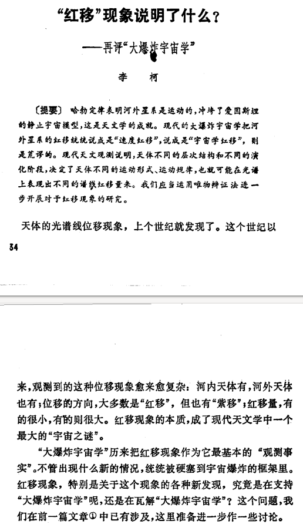
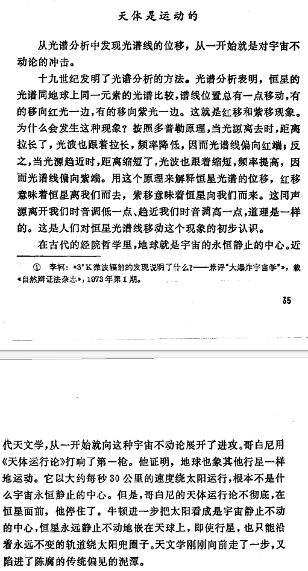
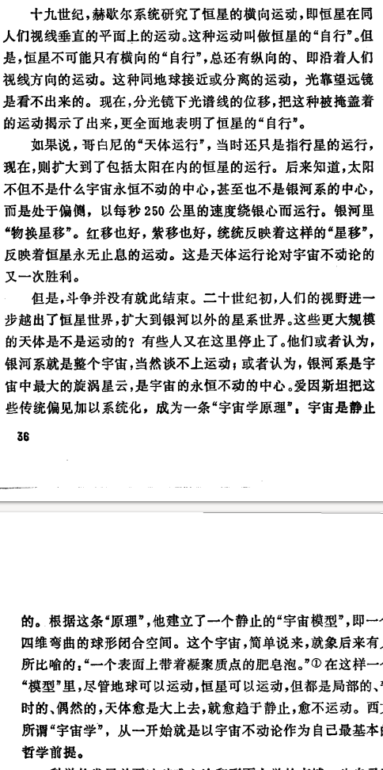
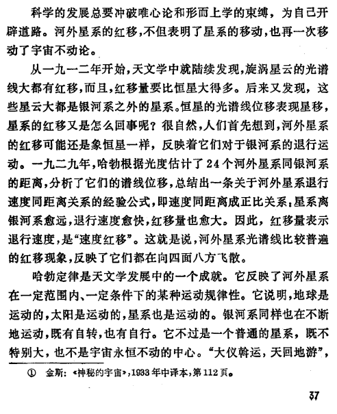
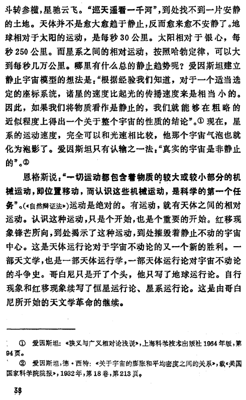

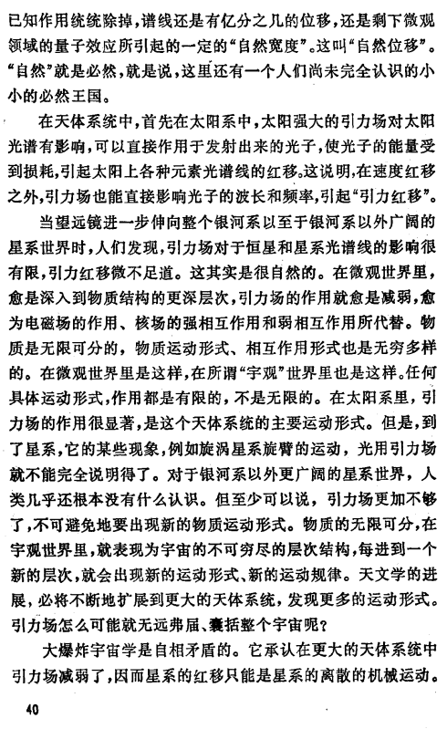
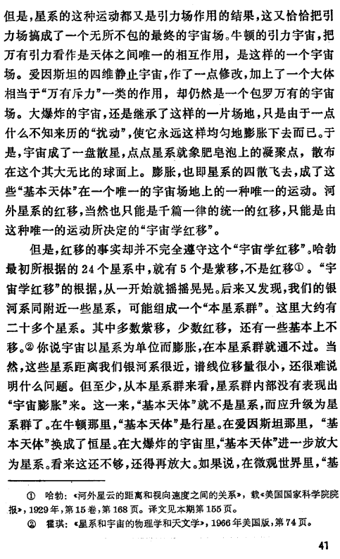
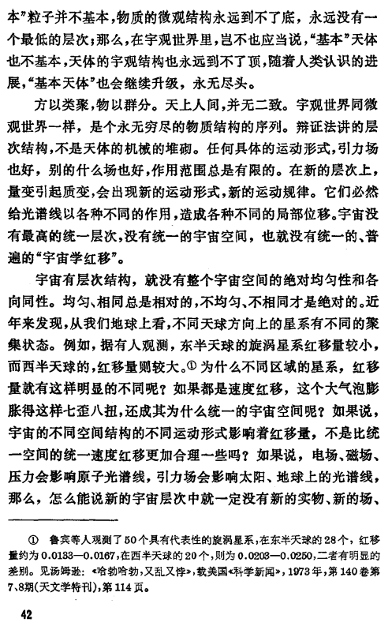
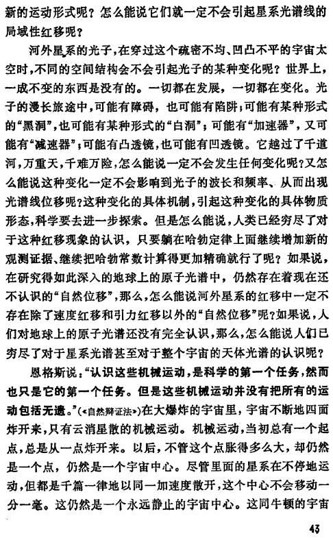
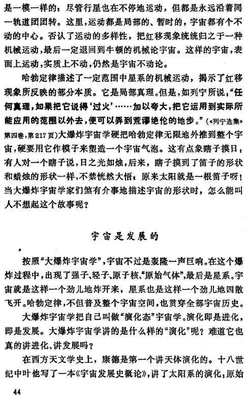
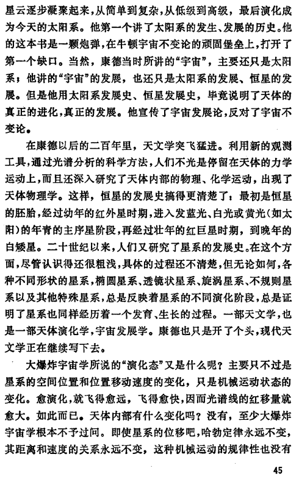
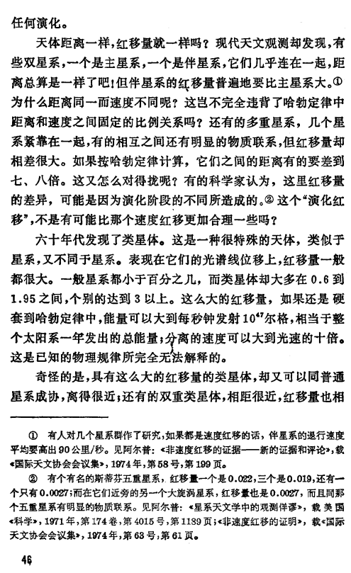
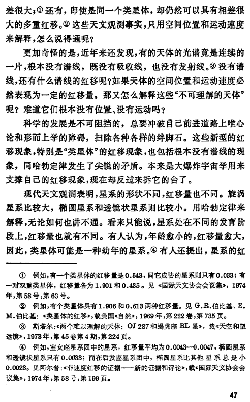
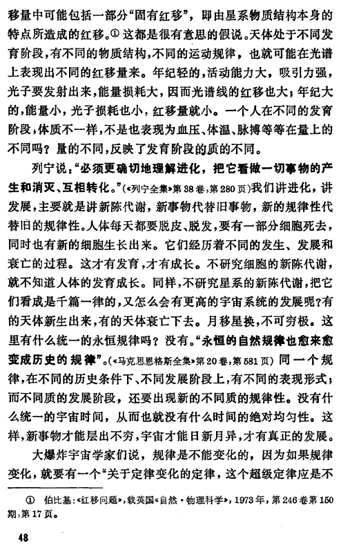
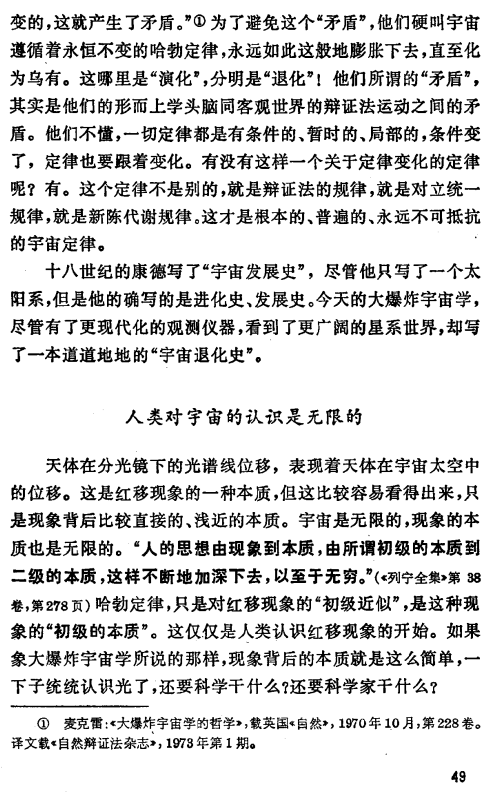
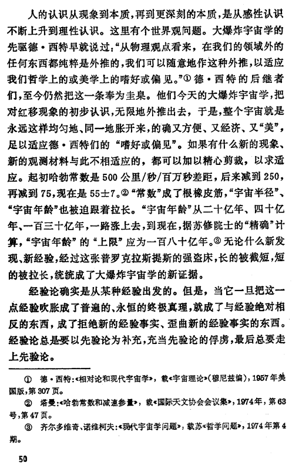
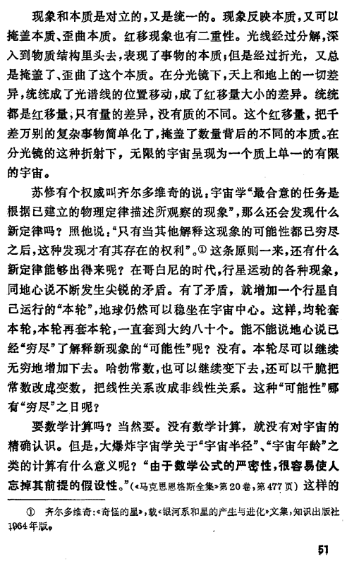
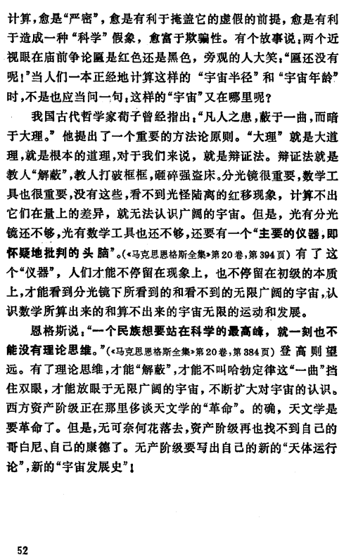
评爱因斯坦的时空观 李柯.pdf (1.3 MB)
评爱因斯坦的运动观 李柯.pdf (1.6 MB)
评爱因斯坦的物质观 李柯.pdf (1.3 MB)
关于爱因斯坦和相对论的讨论 来信来稿摘登.pdf (277.8 KB)
评相对论的空间、时间和惯性运动观念 武哲.pdf (716.4 KB)
基本粒子演化假说和河外星系红移解释 唐孝威.pdf (327.7 KB)
“不断创造物质”的学说必须批判——兼评唐孝威同志的“基本粒子演化假说和河外星系红移解释”一文 何祚庥.pdf (686.1 KB)
质量可变 物质不灭——评唐孝威、何祚庥二同志的讨论 卢炬甫.pdf (341.5 KB)
基本物理常数变不变——兼评《基本粒子演化假说和河外星系红移解释》和《“不断创造物质”的学说必须批判》黄政新.pdf (279.4 KB)
关子粒子静质量随时间变大的问题 朱清时.pdf (283.5 KB)
对“基本粒子演化假说”的一些探讨 谭涛.pdf (219.7 KB)
复旦学报自然科学版的文章
1 个赞
多的话先不谈，这段东西中我丝毫看不见一个马列毛主义者应有的路线觉悟和唯物史观，似乎在他眼里这场在上层建筑领域的路线斗争，运用唯物辩证法改造资产阶级唯心及形而上学糟粕的阶级斗争路线斗争是一次政治作秀，是少数人的狂欢，完全忽视其真正意义，忽视无产阶级专政的必要。再说，参与这场论战的只有“学阀”吗？可不是只有李柯的人参与了研讨，各地包括一些工农兵学员也参与了这玩意所谓的少数人的活动。
1 个赞